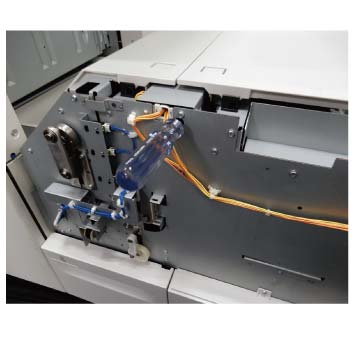
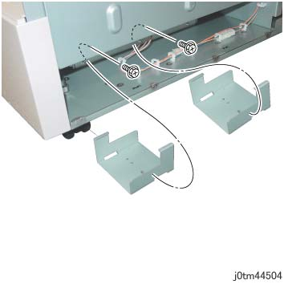
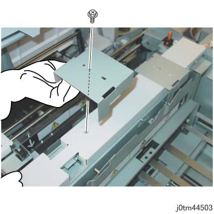
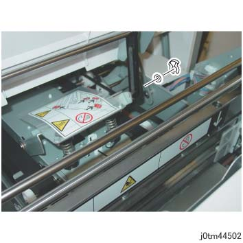
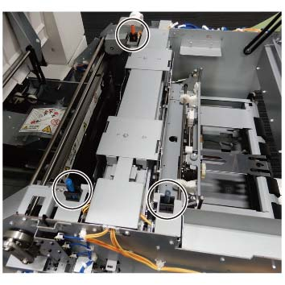

ADJ 45.1.1 方背折叠裁切器 纸张 feeding 检查 
目的
To visually 检查 方背折叠裁切器 操作, 送纸 at the state 当...时 the 顶部 左侧 盖板 和 the 顶部 右侧 盖板 是 打开.

注意不要 touch the cutter 章节 as the blade of 裁切器 Cutter poses a 危险.

Keep 装订器 堆叠器 纸盘 raised as it interferes 使用 opening 和 closing 的 顶部 左侧 盖板 当...时 it is lowered.
当...时 turning 关闭/脱离 电源开关 的 主机, 确保 the [数据] 灯 不是 flashing.
按下 [Job 状态] to 确认 那里 是 编号 jobs in progress/waiting in the queue. 关闭电源 开关, 然后 确保 the screen 显示 关闭 和 该 [电源 Saver] is 编号 longer flashing.
关闭 the 主 电源 开关, 确认 the [主 电源] 灯 具有 turned 关闭/脱离, 和 然后 unplug 电源插头.
调整
关闭电源 开关, 和 unplug 电源插头 从 the 出口 在...之后 机器 具有 已完成 其 关机 process internally.
分离方背折叠裁切器. (REP 45.1.1)
拆卸 前面 上方 盖板. (REP 45.2.1)
拆卸后盖板. (REP 45.4.1)
拆卸 出纸 盖板. (REP 45.4.2)
Dock the 方背折叠裁切器 该 已 detached in 步骤 2.
Reconnect 连接器 (x2) 该 已 断开的 in 步骤 2.
插入 tip 的 5.5mm Box Driver 进入 the hole at ...的前面 machine, 和 打开 the 顶部 左侧 盖板 和 the 顶部 右侧 盖板 当...时 releasing the 链接. (图 1) (REP 45.5.1)

(图 1) tm445502
安装 provided jig (x2), 和 keep the Cutter Shutter 打开.
拆卸螺钉（x2）, 和 拆卸 jig stored behind the 内部 盖板. (图 2)

(图 2) tm44504
安装 jig (x2) at ...的顶部 裁切器, 和 用...固定 the 螺钉（x2）. (图 3)

(图 3) tm44503
拆卸 KL-卡扣 (1), 垫圈, 和 拆卸 上方 皮带 组件 链接 的 顶部 左侧 盖板 和 传输 章节. 放下 上方 皮带 组件. (图 4)
当...时 the 上方 皮带 Assy is operated together 使用 顶部 左侧 盖板 in a raised state, 请注意 interference 发生 在...期间 方背 操作 becomes the 原因 of 故障.

(图 4) tm44502
Cheat the 顶部 左侧 盖板 和 顶部 右侧 盖板 互锁 (x3). (图 5)

(图 5) tm445503
插头 in 电源线 和 打开电源 机器的.
设置 [折叠], or [折叠 & 装订针] + [裁切] + [Book Pressing] + [纸张尺寸] jobs 使用 UI Menu 和 按下 启动 button 使用 顶部 左侧 盖板 和 顶部 右侧 盖板 打开. 检查 方背折叠裁切器 纸张 feeding 操作.
在...之后 checking, 关闭电源 开关 再次, 和 unplug 电源插头 从 the 出口 在...之后 机器 具有 已完成 其 关机 process internally.
拆卸 cheat 的 顶部 左侧 盖板 和 顶部 右侧 盖板 互锁 (x3) in 步骤 11.
安装 KL-卡扣 (1), 垫圈 该 已 removed in 步骤 10, 和 恢复 上方 皮带 组件 to 其 原始 位置.
拆卸 jig 安装在 步骤 9, 和 restore 机器 to 其 原始 state.
插头 in 电源线 和 打开电源 机器的.
设置 job 在...上 UI screen by following [折叠] or [折叠 和 装订针] + [裁切] + [方背] + [纸张尺寸], 检查是否 the 操作 的 方背折叠裁切器 正确.